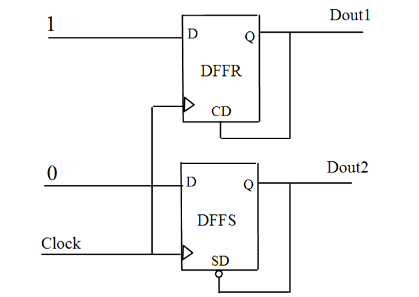

| Description | This rule detects illegal connections that generate uncontrollable pulses in the design (e.g., a connection from the Q output to the asynchronous clear input). These pulses generate an important switching activity of the chip. Furthermore, these pulses are not controllable and decrease test coverage. |
| Policy | DESIGN |
| Ruleset | CLOCKS |
| Language | VHDL/Verilog |
| Type | Hardware |
| Severity | Error |
This is an example of invalid Verilog code, followed by a circuit diagram that illustrates the problem:
module ntl_clk21_top (Clock, Din, Dout1, Dout2 ); input Clock, Din; output Dout1, Dout2; reg Dout1, Dout2; always @(posedge Clock ) begin if (Dout1) Dout1 <= 0; // NTL_CLK21 fires -- self flip-flop else Dout1 <= 1; end always @(posedge Clock) begin if (!Dout2) Dout2 <= 1; // NTL_CLK21 fires -- self flip-flop else Dout2 <= 0; end endmodule